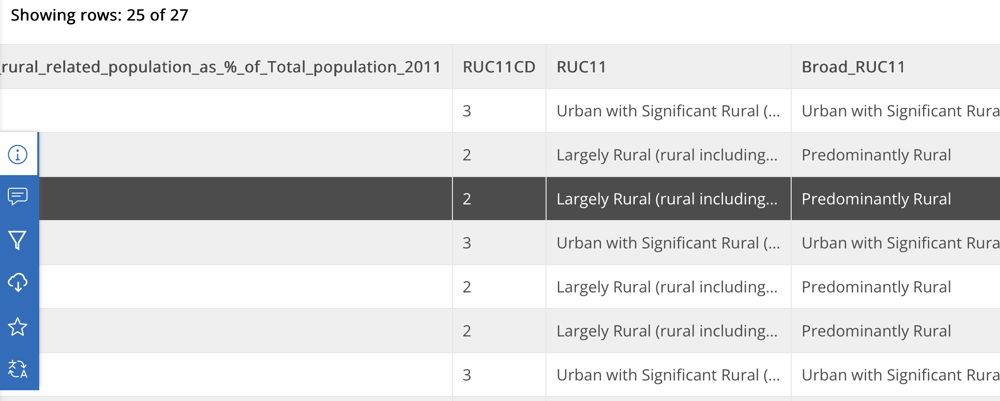

ONS Rural-Urban Classification Scheme
Introduction
This piece describes the method for classifying areas of England and Wales by how rural or urban they are and then I describe some personal grievances with the PDF.
Reference: Rural-Urban Classification - Methodology - 2021 - PDF - Download Link at ONS
Overview of Publication
The Office of National Statistics (ONS) publishes a host of documents such as their 2021-census-based system for the classification of how rural or urban an area is. They call this the Rural Urban Classification scheme or RUC.
As a newcomer to the field, I can see why implementing such a method would be a challenge. The nuances of what we consider urban are more complex than what we can reasonably deduce from a 2D map with some addresses for buildings.
Some examples questions might include:
- What do you consider a "major" settlement?
- Does the density and type of housing matter? How many gaps between houses are needed to reduce an Urban score?
- Does proximity to a major settlement matter? How do you distinguish between a truly rural hamlet of ten houses, and the same set of houses if they were located on the main road right by a major city?
- Is an area more rural if it has no transport links to the nearest major population centre?
- Does it matter what facilities a population can/can't access regardless of their distance to a major town/city?
- Do geographical features like an impassable river or mountain chain have any effect?
- Does an agglomeration of many small villages get treated the same as a single town of the same population?
In the publication, they explain how they implement the RUC scheme and its improvements upon their existing 2011 Census analysis.
Method Summary
For their summary document, please see this link to the ONS: RUC User Guide
Their basic method roughly as follows:
- Divide the country into 50m x 50m cells
- Calculate the cell population Density Profile (effectively the density of addresses from the census)
- Using a set mathematical rules based on concentric circles from the middle of the cell, classify the cell into one of three categories:
- Urban
- Larger Rural
- Smaller Rural
- Now they scale up one level from these cells and classify the smallest unit of the census called an Output Area (OA), (see Footnote). For each OA, they assign it one of the same three options based on which cell class is most common within the OA. Some manual adjustments are made for OAs that don't align well with any cells.
- OAs are then re-classified as Urban if the Ordnance Survey data states the OA is within a population center of > 10,000 people and vice versa to Larger Rural, overriding the majority cell verdict
- Border areas around population centers, near the Scottish border and coastal towns are given special treatment
- For each of the three categories, if the driving distance to a Major Settlement (defined as >75,000 people) is within 30 minutes, then the category is sub-classified as "Near" Major Urban Settlement or "Further" if not within 30 minutes
- This therefore leaves us with 6 classifications
Notes
The use of 50m cells is an improvement in resolution over the 2011 analysis.
They note that an analysis of urbanisation at lower resolution (larger areas than OAs), such as by Local Authority Districts (LADs, see footnote) could be misleading as large urban settlements will dominate.
Criticisms
1. Choosing road transport for proximity to major settlements
Roads may be the primary transport links between settlements, but could this be misleading or biased?
They do mention that the RUC system necessarily cannot take into account such nuances - it is a general system but...
A rail link through a village might well raise its status and connect it faster to a major city than any road.
Secondly, the assumption is that the person at an address can reasonably be expected to drive or catch a bus. We know bus routes, particularly in more rural areas are typically slow, infrequent and stopping services so anyone disabled, too young, too old or too poor to own their own vehicle is immediately ignored i.e. the distinction between near and far from a major settlement is presented from the point of view of a wealthier, able adult. In fairness as a counter-argument, 89% of kilometers travelled were by road in 2025 (Government Transport Statistics 2025). As a counter-counter argument (so just an argument?), transport into major settlements is more likely to be by public transport anyway due to the congestion of cities, parking charges, eco-taxes, park-and-ride options and simply the fact that most public transport networks point to/from population hubs. Also this raises another point - does the transport have to be to a central point within the city or the city's boundaries? It uses a Population Weighted Centroid (PWC) which essentials defines the middle of a major settlement by where the population lies (rather than simple geometry or a symbolic town center) but does access to this centroid matter more than (say) the retail parks on its periphery. What if the center of the city has virtually no living population (e.g. it's just businesses)? Finally is the PWC appropriate when we're more interested in access to city services, not housing?
2. Terminology
There are a lot of acronyms in this PDF, but I don't feel they're always well used/defined - particularly for a document that is for public reading.
Page 2 mentions OAs (Output Areas) with no definition. The term in my view is itself deliberately vague (perhaps something better might be "smallest census unit or area"), and given the complexity in how OAs are apparently calculated, I believe a small explanation is required in this document at any rate.
There are simply too many acronyms in the document (BUAs, ABUAs, RUCs, OAs, PWCs, LSOA, MSOA, LADs). Other long terms like "Intermediate Rural: Majority further from major town or city" (one of the six classifications) never receives a proper acronym despite being one of the six core classifications in the document.
The acronyms would ideally be defined in an index at the start or end of the document.
Just to rub the acronyms in a bit, one section is titled "OA allocation to ABUAs".
The use of the classifications in datasets is very hard to understand. If you look at the image below, taken from this source and displayed on a regular screen, the classifications are hard to read due to their length. Here, an acronyn might have been better. Naturally you could download the CSV instead or hover over each cell with your mouse, but I think if the classifications are effectively a scale of highly urban to highly rural, then a number value from 1 to 6 would be more succinct.

Summary
While the summary document is much neater, the primary PDF discussed here is just a bit too "Mr Geography" giving slightly too little background on the Census Areas (e.g. OAs), too many acronyms and some poor data displays.
The reliance on private road transport may also affect the classification of local authorities (for example), and if central government funds and grants to local authorities were based in part on their access to major settlements by private transport alone, then this decision could have unintended consequences.
Footnotes
Output Areas (OAs) - ths lowest grographical division in the census data defined as a group of addresses within a postcode determined by an algorithm to try and keep within 40 and 250 households and... a resident population between 100 and 625 persons
to maintain anonymity. They were first set up in 2001 and have been adjusted in the 2011 and 2021 censuses. See the albeit vague definitions at the ONS website link.